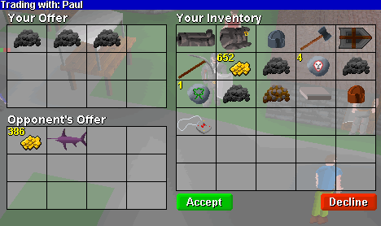
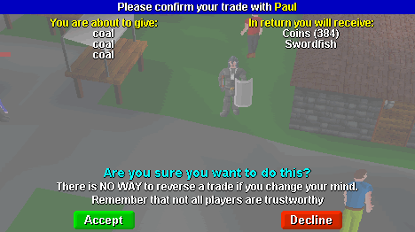

|
Trading with other players
Trading items with other players is an important aspect of RuneScape and will often allow you to buy and sell your items at a better price than the shops offer. Many rare items cannot be purchased in the shops at all and can only be obtained by finding them yourself, or by purchase from another player.
Before you start trading you need to find a buyer (or seller). For instance, if you have mined some coal and you want to sell it, you could try standing in a busy area and saying "Coal for sale!"
Once you have found someone to trade with, click on their character with the right mouse button, and select the "trade-with" option. The other player will be informed of your request, and to accept your trade they must click on your character and also select the "trade-with" option.
At this point a screen similar to the one shown above will appear. All the items in your inventory are shown to the right, and the items being traded are shown to the left. To add an item to your offer click on it in the inventory box. If you wish to add multiple items (e.g a stack of coins), then hold down the mouse button over the stack until the desired number has been added. To remove an item from your offer, just click on it in the offer window and it will be removed.

The items your opponent has offered are shown in the bottom left hand window. Once you are happy with the proposed exchange, press the green "accept" button.

A final confirmation like the one shown above will appear. This clearly lists everything which is being swapped and gives you one last chance to check you are getting the trade you expected. You should read this information carefully, and then once you are sure you are happy with the trade, press the green "accept" button.
Remember that there is no way to reverse a trade if you later change your mind. So be careful! Giving items in return for information, or with the promise of getting them back is very risky. Not all RuneScape players are honest, and you could end up losing your items for nothing if you do this.
|